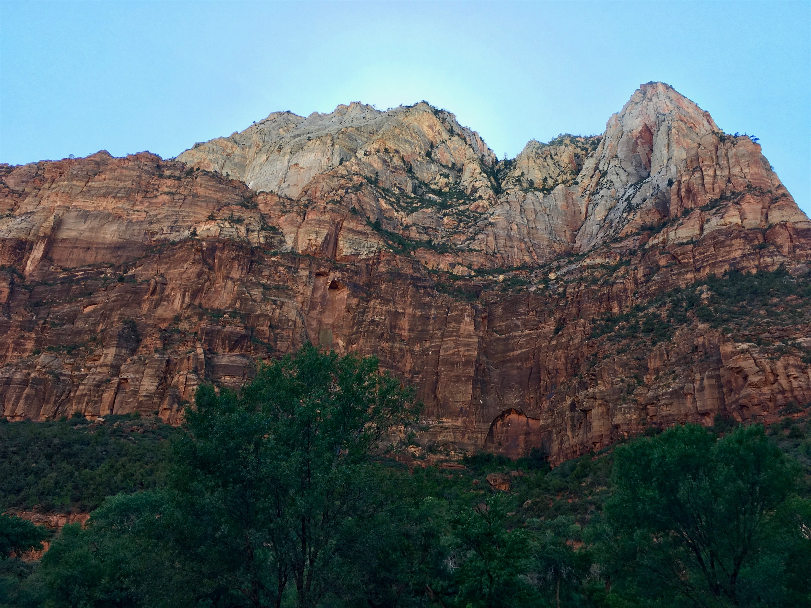
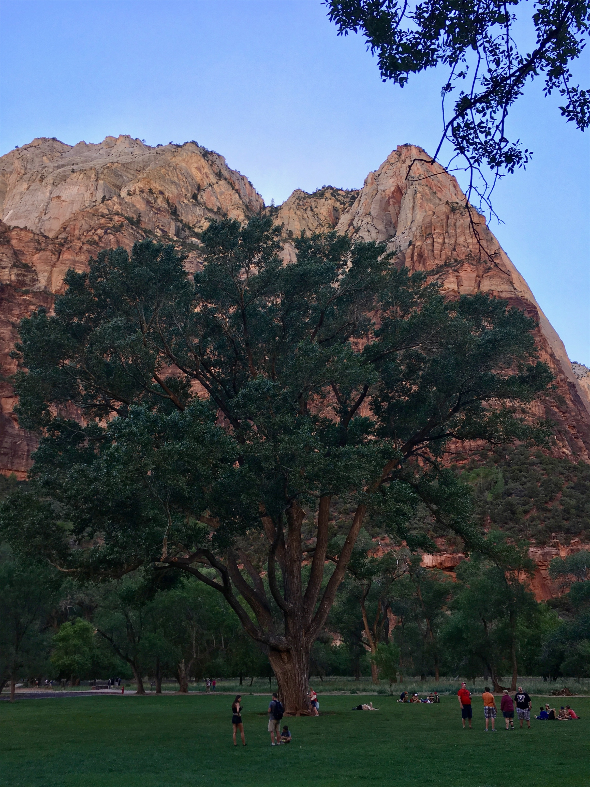
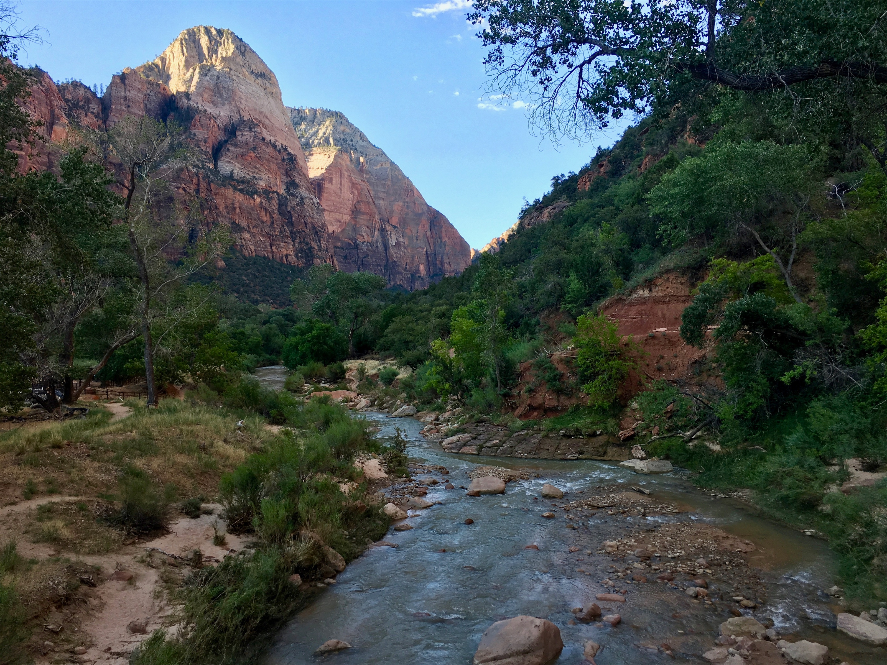
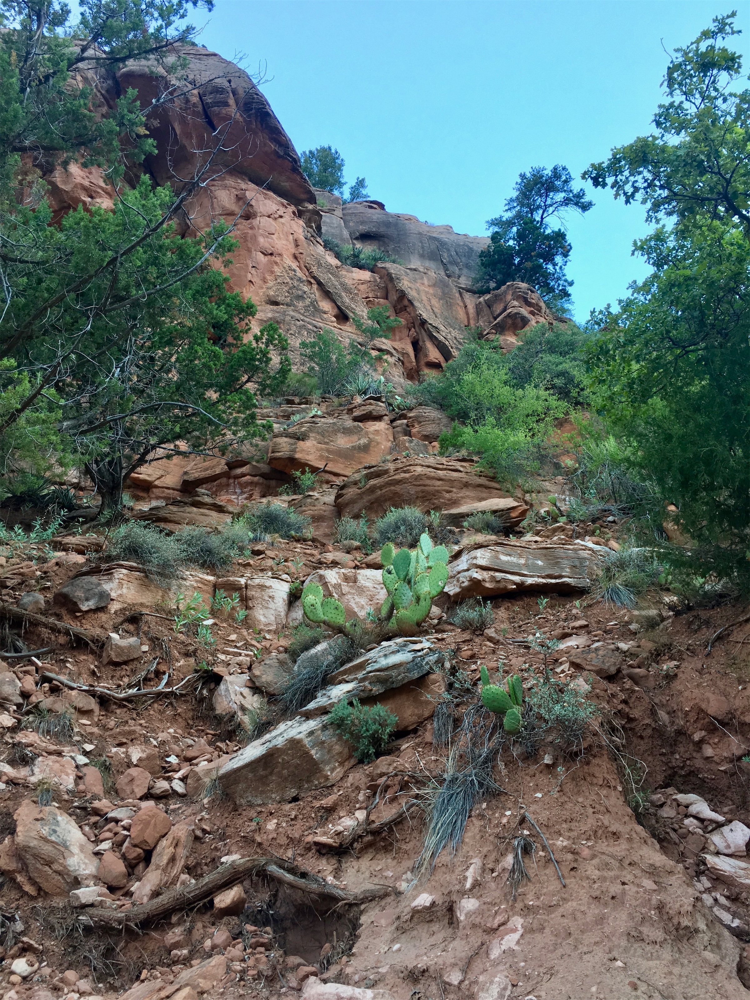
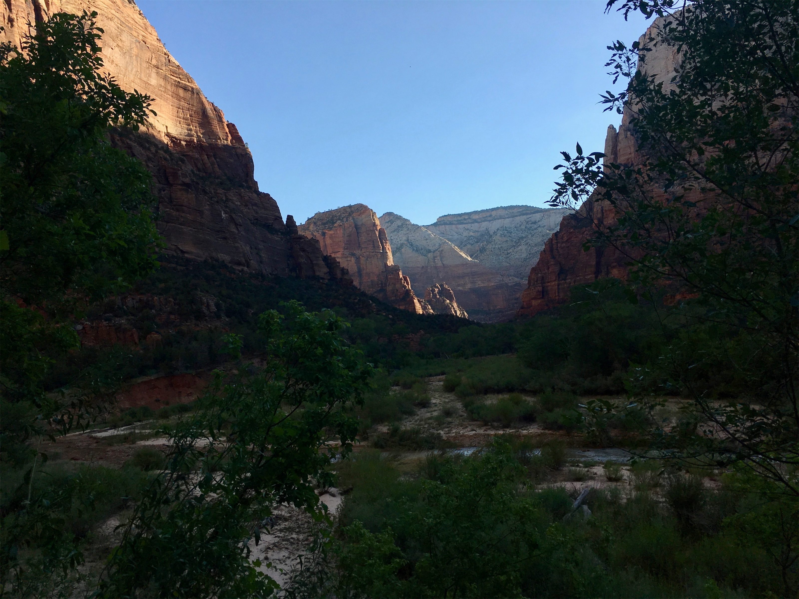
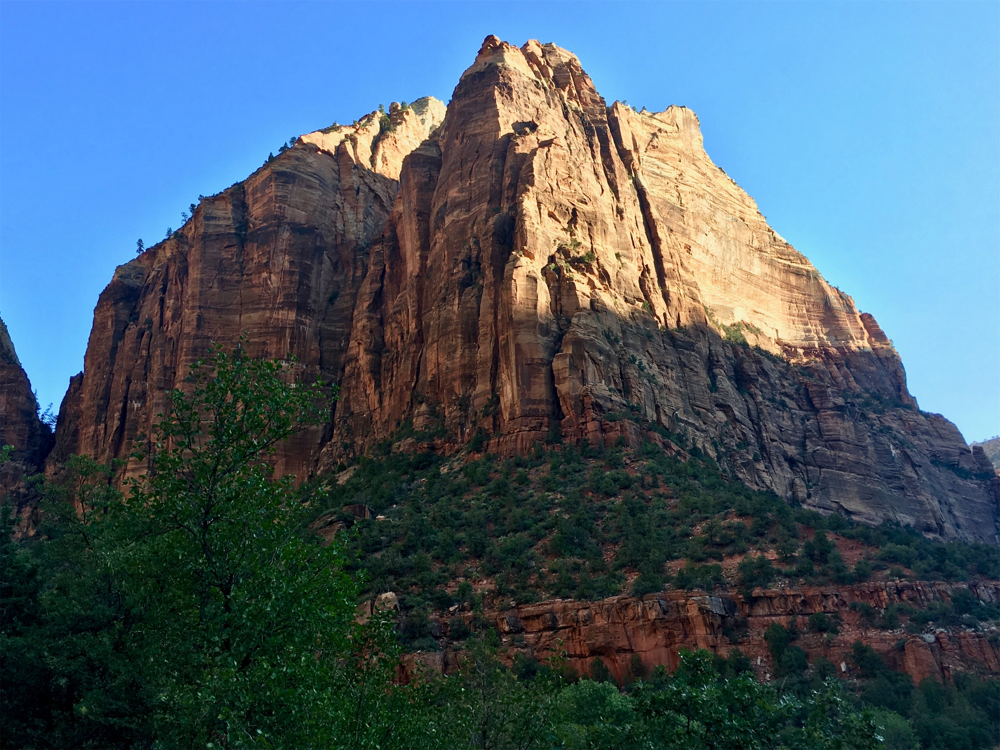
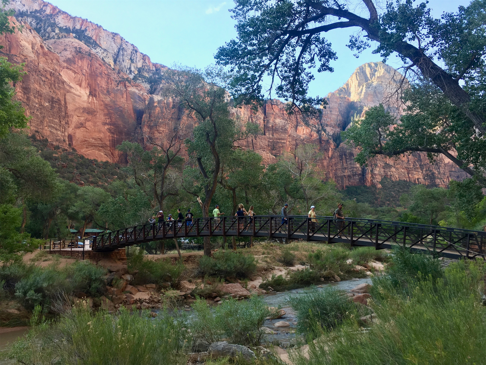
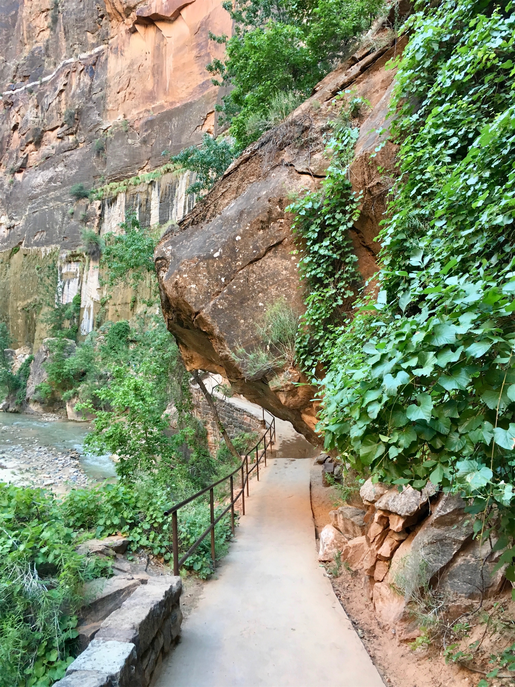
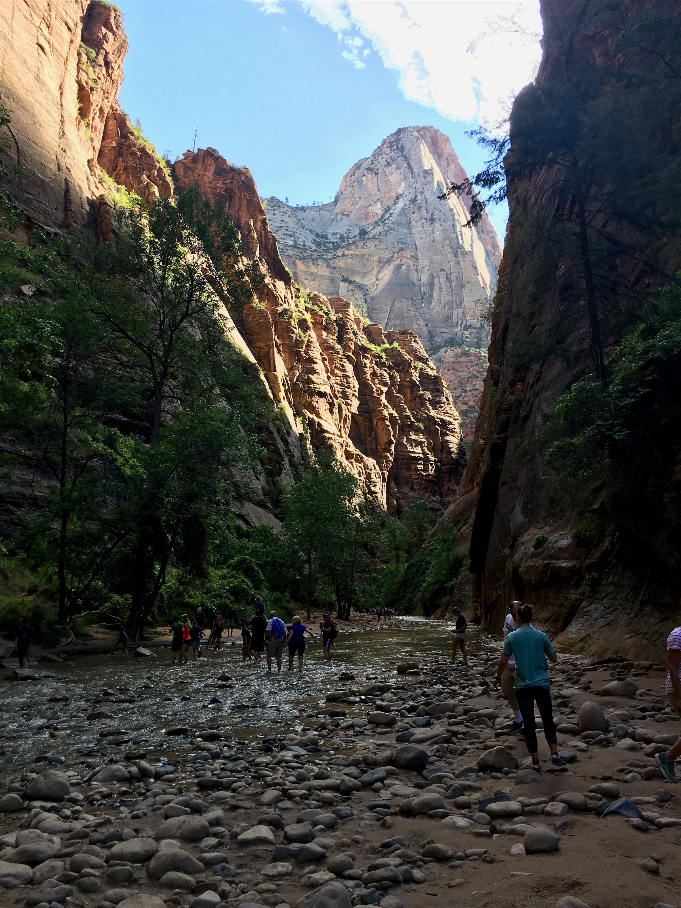

Monday, Jul 23, 2018, 3:06 PM MDT
Zion National Park Visitor Center, Springdale, UT, United States
99°F Sunny
99°F Sunny
![]()
7/23 Baker, NV -> Zion Canyon Visitor Center, UT 195 mi, 3.5 hr
7/23 Zion Canyon Visitor Center -> Zion Lodge 4 mi, 0.5 hr
7/24 Zion Lodge, 0 mi, 0 hr
Trip Total: 9,105 mi
Leaving Baker to the southeast, we crossed Utah’s Great Basin again, which is unlike any other terrain on the trip. We would drive through a mountain pass with trees and grass, see the valley on the other side and the road going straight across its floor, travel through the valley desert with sagebrush everywhere and occasional salt flats, and then drive up into another pass and repeat the same cycle. We were almost alone on the road the whole way, without a town in site. We went across about four of these passes, and finally went down a valley and caught a little of I-15, which took us toward Zion and out of the Basin for good and onto the Colorado Plateau.
Zion gets the award for most scenic drive to and from the park. Going in from the south about 20 miles, we saw the red orange and gray vertical canyon walls. Once in the park, the fifth largest for visitors and on the Pioneer Day long weekend, there was a large crowd at the visitor center. Zion’s main attraction is a canyon with a scenic drive along the Virgin River at the bottom. The road is closed to cars and people must use the excellent shuttle system instead, but since our lodge was about halfway up the canyon, we had a special pass that allowed us to drive to and from it on the road.
In every direction and along its entire length, the canyon is amazingly scenic. Most people walk around while looking up the vertical walls that are about a half-mile high. And, it is hot in the afternoon (104 degrees) but cool at night, so we got up early the next day and went on the 1.2 mile Lower Emerald Pools hike that started from our hotel, where we saw a doe and its fawn. Afterwards, we took the shuttle ride, which comes about every 5-10 minutes, north and back. Zion had a terrible flash flood a few weeks ago, and it closed several famous trails due to the damage. The next morning, we took the shuttle to the farthest north stop and did the 2.2 mile Riverside Walk, which took us to the famous Narrows part of the canyon. This was one of the top hikes on our whole trip, in the early cool and shade along the Virgin River. At the end, some choose to continue hiking right in the river up the narrowing canyon. Leaving the park after our hike, we made our way east up canyon switchbacks with more amazing scenery, and went through the 1.1 mile-long historic Zion-Mt. Carmel tunnel through a mountain, which was built in the late 1920s.









